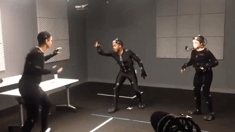

I work as an independent Motion Capture Director, Movement Coordinator, Technican, and perform data cleaning services. I teach two Motion Capture courses at NYU, and have taught workshops at Yale and RLab. Day rates can be provided by contacting me at katsullivan@nyu.edu. Below you can find a few selected works.
Netflix: Bird Box
For the release of Netflix's most watched original movie Bird Box, VolvoxLabs created an eerie LED box for The Shops at Columbus Circle.
Role: Motion Capture Director, Data Cleaning, Retargeting
The Truth Will Set You Free
A stunning projection mapped projection by Light Harvest Studio featuring performances from former Pilobolus dancers.
Role: Movement Coordinator, Motion Capture Technican
A police VR simulation tool designed to teach and educate law enforcements about how to handle a variety of situations while on patrol.

Role: Movement Coordinator, Motion Capture Technican, Data Cleaning
Pharos
For Childish's Gambino's performance in New Zealand, he wanted to create a completely new experience the audience could experience together inside a 3000 person dome. 2N served as the creative team.
Role: Motion Capture Technican, Data Cleaning
Cuervo Dance with Dead
A live motion capture pop up for Jose Cuervo developed by Sensorium Works. The experience included live motion capture choreography and VR installations.
Role: Motion Capture Technican, Data Cleaning, Operator/Director of Inertia-Based Suits